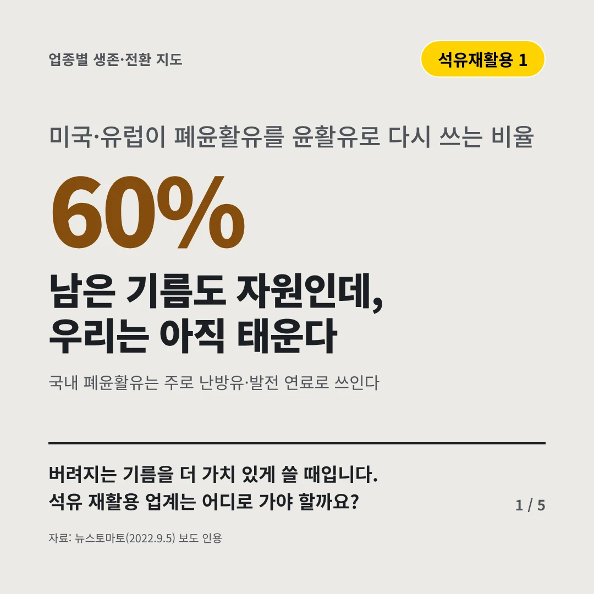
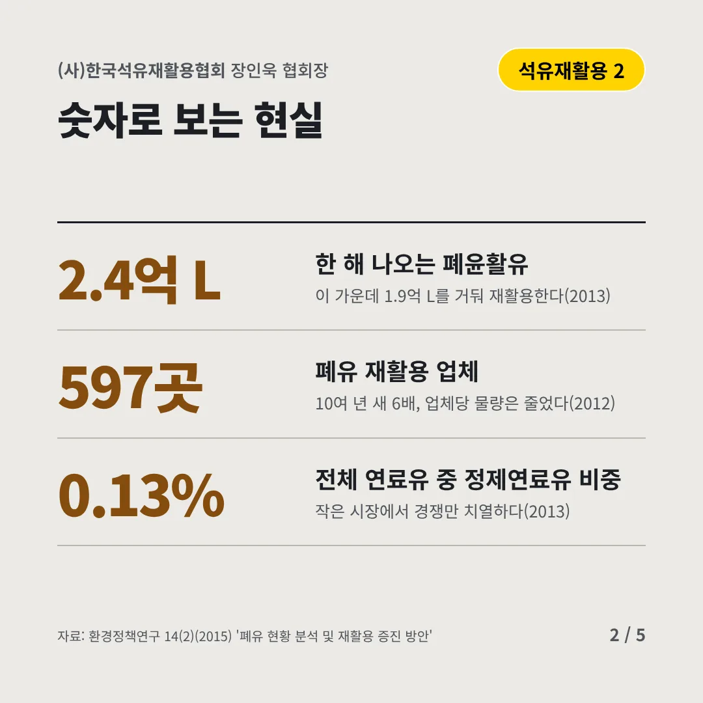
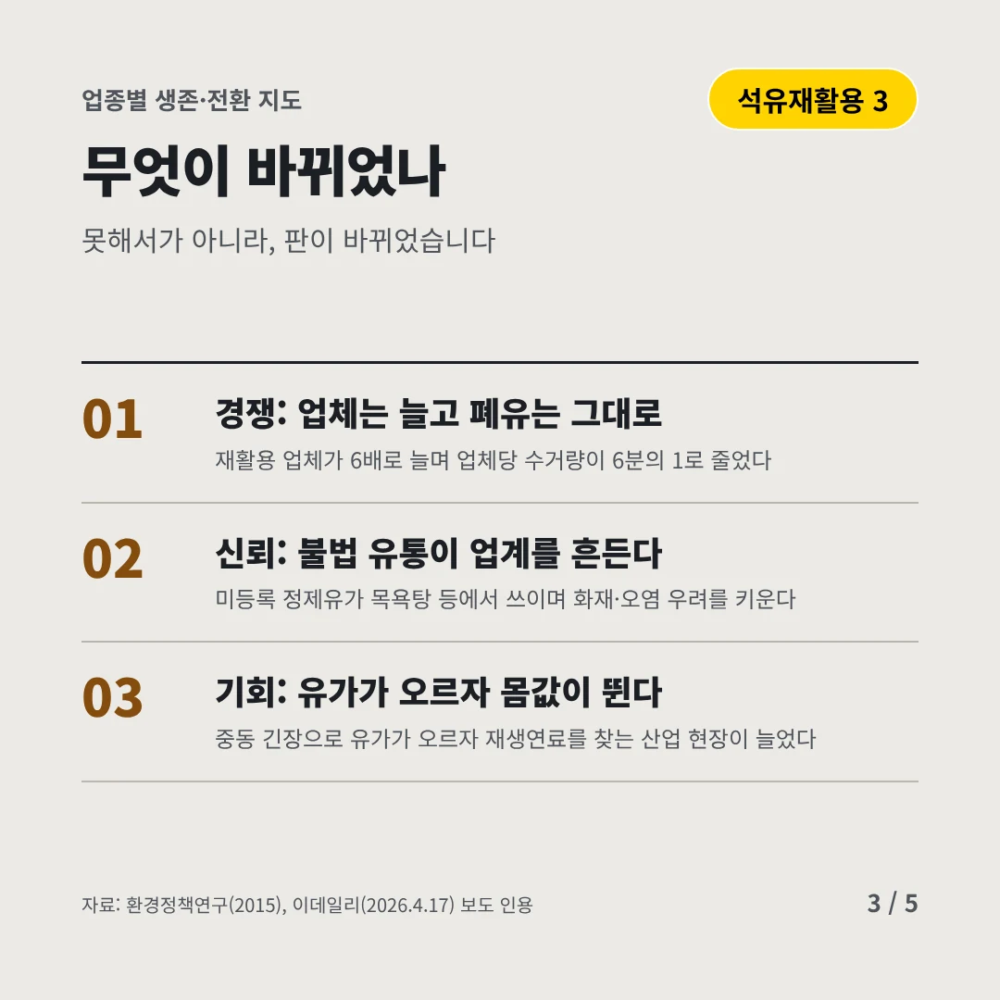
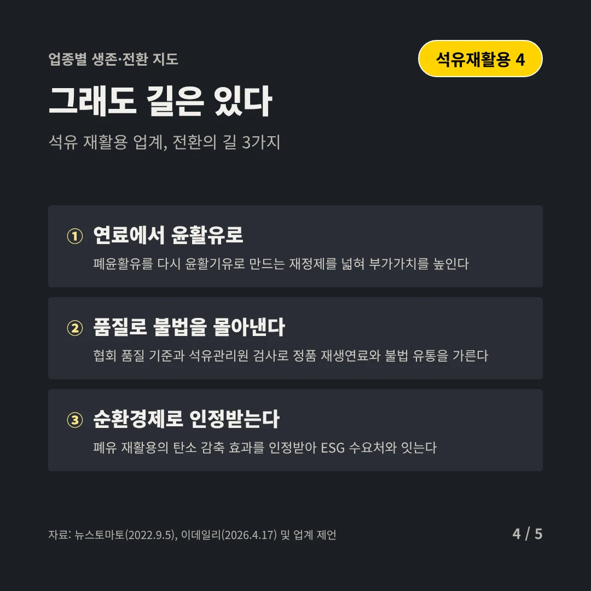
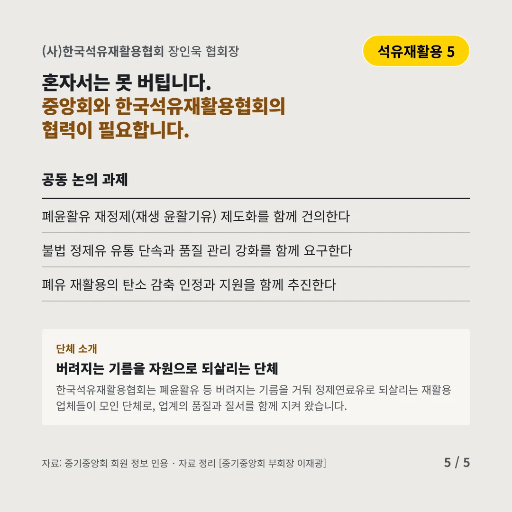
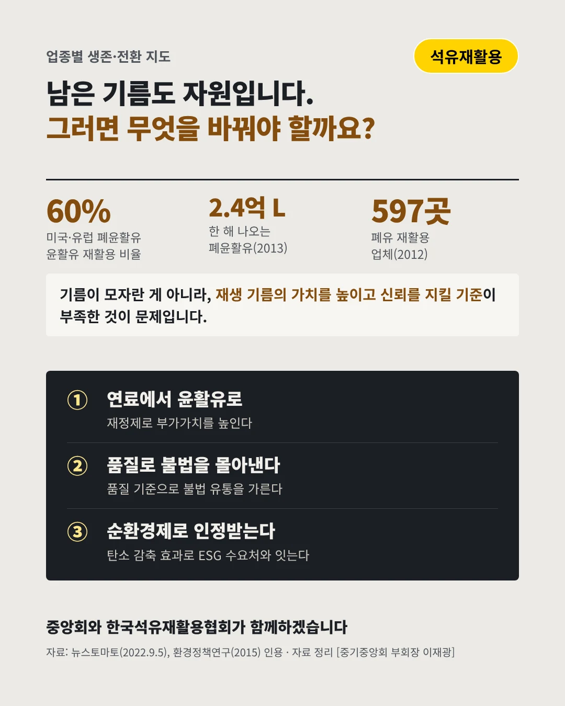

(사)한국석유재활용협회
남은 기름도 자원인데, 우리는 아직 태운다
60% 미국·유럽이 폐윤활유를 윤활유로 다시 쓰는 비율






버려지는 기름을 더 가치 있게 쓸 때입니다. 석유 재활용 업계는 어디로 가야 할까요?
숫자로 보는 현실
- 2.4억 L한 해 나오는 폐윤활유이 가운데 1.9억 L를 거둬 재활용한다(2013)
- 597곳폐유 재활용 업체10여 년 새 6배, 업체당 물량은 줄었다(2012)
- 0.13%전체 연료유 중 정제연료유 비중작은 시장에서 경쟁만 치열하다(2013)
무엇이 바뀌었나
- 경쟁: 업체는 늘고 폐유는 그대로재활용 업체가 6배로 늘며 업체당 수거량이 6분의 1로 줄었다
- 신뢰: 불법 유통이 업계를 흔든다미등록 정제유가 목욕탕 등에서 쓰이며 화재·오염 우려를 키운다
- 기회: 유가가 오르자 몸값이 뛴다중동 긴장으로 유가가 오르자 재생연료를 찾는 산업 현장이 늘었다
그래도 길은 있다
- 연료에서 윤활유로폐윤활유를 다시 윤활기유로 만드는 재정제를 넓혀 부가가치를 높인다
- 품질로 불법을 몰아낸다협회 품질 기준과 석유관리원 검사로 정품 재생연료와 불법 유통을 가른다
- 순환경제로 인정받는다폐유 재활용의 탄소 감축 효과를 인정받아 ESG 수요처와 잇는다
한 장 요약

단체 소개
한국석유재활용협회는 폐윤활유 등 버려지는 기름을 거둬 정제연료유로 되살리는 재활용 업체들이 모인 단체로, 업계의 품질과 질서를 함께 지켜 왔습니다.
자료: 뉴스토마토(2022.9.5), 환경정책연구 14(2), 재활용 증진 방안', 환경정책연구(2015), 이데일리(2026.4.17)